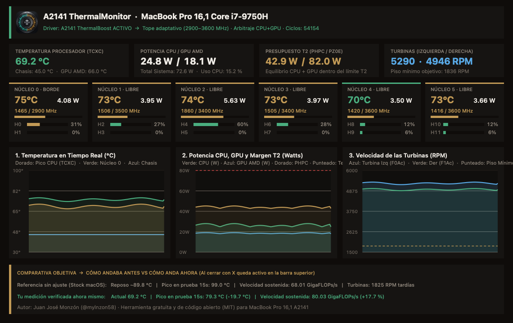

Monitor de núcleos, Watts y turbinas para MacBook A2141
Aplicación nativa y liviana en macOS para la MacBook Pro de 16 pulgadas de finales de 2019 con procesador Core i7-9750H. Muestra en tiempo real la potencia en Watts y MHz de cada uno de los 6 núcleos, el consumo de CPU y gráfica AMD y las turbinas para corroborar cómo funcionaba tu equipo antes y después de aplicar el driver A2141 ThermalBoost.

Todo lo que necesitas ver en una sola ventana
Muestra la temperatura individual de cada núcleo físico, el tope de frecuencia activo en MHz y las barras de carga de sus 12 hilos para verificar que el Núcleo 0 trabaje fresco a 3200 MHz mientras los demás suben hasta 4500 MHz.
Dibuja segundo a segundo la curva de temperatura del procesador y chasis, el consumo en Watts frente al techo disponible en el chip T2 y las revoluciones de las dos turbinas.
Incluye el botón "Medir 15s (Comparar)" que ejecuta una prueba de cálculo en los 12 hilos mientras ves las gráficas moverse en vivo y compara tus números contra el estado original sin ajuste.
Se instala en Aplicaciones y en la barra superior de macOS sin necesidad de desactivar SIP ni usar permisos especiales para monitorear. Además permite guardar una captura PNG con un clic.
Descarga directa sin compilar o instalación por Terminal
Nota sobre macOS: si al abrir la app descargada aparece el aviso de que "Apple no pudo verificar" (por no tener licencia comercial paga de Apple), haz clic en Listo, abre Ajustes del Sistema → Privacidad y Seguridad y presiona "Abrir de todas formas".
O bien instala por Terminal (usa el binario ya precompilado en prebuilt/)
git clone https://github.com/mylnzon58/a2141-macos-thermal-monitor.git
cd a2141-macos-thermal-monitor
chmod +x install.sh uninstall.sh
./install.sh¿Quieres aplicar también la solución térmica?
Esta aplicación visual es el complemento directo de nuestro driver abierto para la MacBook Pro 16,1 A2141. Puedes medir primero tu equipo en estado original con este monitor, luego instalar el driver siguiendo su guía de 4 pasos y volver a medir para comprobar cuántos grados baja tu máquina.
Compartido con humildad por Juan Monzón
Desarrollé este monitor y el ajuste térmico desde Argentina apoyándome en inteligencia artificial junto con pruebas cuidadosas paso a paso sobre mi propia MacBook Pro 2019, con la idea de que cualquiera que tenga este modelo pueda entender el problema y medir con claridad si la solución mejora su rendimiento.